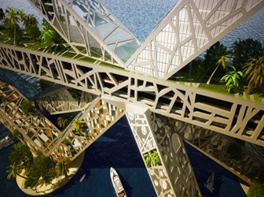
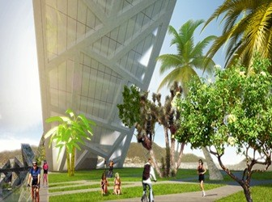
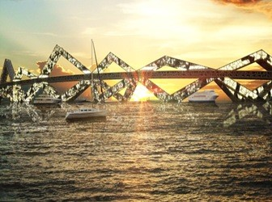
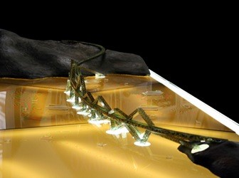

Puente Bahía Acapulco
Este diseño de puentes colosales de la Ciudad de México basado en Arquitectura BNKR es un enfoque único para el problema de la financiación del proyecto. Sabiendo que el gobierno municipal de Acapulco no sería capaz de financiar un puente de tres kilómetros, BNKR pensado para atraer las inversiones privadas mediante la transformación de la estructura de apoyo a los espacios habitables. Sin un puente para atravesar ella, la bahía de Acapulco es muy inconveniente para todo el año. El puente se completa un ciclo alrededor de la bahía y conectar a las carreteras y caminos existentes.
 La calzada y aparcamiento para el puente se encuentra en un tubo cuadrado que se divide la superestructura del sistema de apoyo abajo. La parte superior de este está cubierta en los pasillos, bikepaths y los espacios verdes. Las estructuras de soporte triangular casa de los espacios habitables por encima y por debajo de esta arteria principal. El puente se establece sobre bases semejantes a islas que podrían actuar como muelles para embarcaciones y permiten a los habitantes y visitantes a disfrutar de la bahía en el nivel del agua.
 Pocos arquitectos contemporáneos han diseñado puentes habitables y sólo un puñado de los puentes se han construido. Steven Holl ha experimentado con la idea en varios proyectos y Zaha Hadid diseñó uno para atravesar el río Támesis en 1996, pero en su conjunto la idea todavía tiene que ser aceptada plenamente en la era moderna. En la Italia medieval muchos puentes de usos múltiples se construyeron, el ejemplo más famoso sobrevivir siendo el Ponte Vecchio de Florencia. El Ponte Vecchio sin embargo, tiene tiendas a través de ella y no casas.